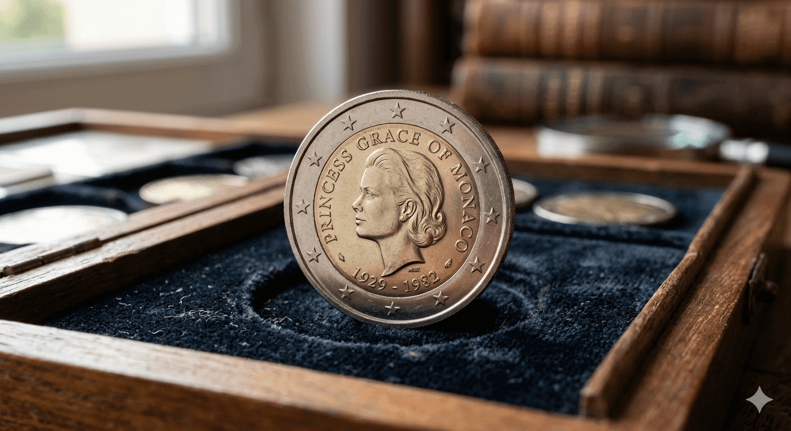

Predstavte si, že držíte v ruke kúsok kovu s nominálnou hodnotou dve eurá. Môžete si zaň kúpiť kávu alebo balíček žuvačiek. Ale ak je na ňom vyobrazený jemný profil kňažnej Grace, práve zvierate v dlani kľúč k legende v hodnote 4 000 eur.
Monako vydalo túto mincu v roku 2007 pri príležitosti 25. výročia úmrtia Grace Kelly – hollywoodskej herečky, ktorá sa stala princeznou. Dnes táto minca predstavuje vrchol každej zbierky a jej cena neustále láme rekordy.

Predtým, než Grace Kelly vstúpila do kráľovského sveta, bola ikonou filmového plátna. Získala Oscara za film The Country Girl a zahrala si aj v legendárnych snímkach režiséra Alfreda Hitchcocka.
Jej život však nabral rozprávkový obrat, keď sa vydala za knieža Rainiera III. a stala sa princeznou Monaka. Práve tento príbeh robí z mince viac než len kus kovu – je symbolom elegancie, krásy a osudovej tragiky. Keď sa táto aura spojí s numizmatickou vzácnosťou, vznikne „dokonalá búrka“.
Vzácnosť, ktorú nevidieť
Zatiaľ čo iné krajiny chrlia pamätné dvojeurá v miliónoch, Monako ich vyrobilo len 20 001. Jedna jediná putovala do múzea, zvyšných 20-tisíc zmizlo v rukách zberateľov rýchlejšie, než stihol uschnúť atrament na certifikátoch.
Príbeh jej ceny je lekciou z investovania. Pri vydaní sa predávala za vtedajších „bláznivých“ 120 €. Mnohí zberatelia váhali. Dnes by za túto sumu kúpili možno len prázdnu krabičku. Dnešná trhová hodnota sa totiž šplhá k hranici 5 000 €. Za posledných 15 rokov vykázala táto minca stabilnejší rast než väčšina akcií na burze.
Môžete ju nájsť v peňaženke?
Tu prichádza otázka, ktorá nedá spať miliónom laikov. Odpoveď je krutá: Pravdepodobne nie. Všetky kusy boli vydané v špeciálnej kvalite „Proof“ a uzavreté v luxusných etuách. Šanca, že by niekto tento zberateľský klenot rozbalil a zaplatil ním v potravinách, je menšia než výhra v lotérii.
Napriek tomu práve táto „nereálna nádej“ poháňa ľudí po celej Európe, aby si každý večer s napätím kontrolovali drobné v peňaženke.
Viac než len platidlo
Kým trhy padajú a kryptomeny kolíšu, „Grace“ si drží svoju gráciu. Je to hmatateľný kus histórie, ktorý sa zmestí do dlane, no jeho hodnota rastie s každým ďalším rokom.
Dnes je považovaná za „Svätý grál“ moderného mincovníctva. Nie preto, že by bola zo zlata. Ani preto, že by bola stará stovky rokov. Ale preto, že v sebe spája tri veci, ktoré ľudstvo fascinujú od nepamäti:
- Sláva: Odkaz hollywoodskej hviezdy prvej veľkosti.
- Kráľovstvo: Spojenie s jednou z najstarších dynastií v Európe.
- Tragédia: Predčasný koniec milovanej princeznej pri autonehode.
„Presne to robí z tejto mince viac než len platidlo. Robí z nej legendu, ktorá v sebe nesie príbeh o sláve, kráľovstve a osudovej tragédii.“
Imagine holding a piece of metal in your hand with a face value of just two euros. You could buy a coffee or a pack of gum with it. But if that coin features the delicate profile of Princess Grace, you are holding the key to a legend worth €4,000.
Monaco released this coin in 2007 to mark the 25th anniversary of the passing of Grace Kelly—the Hollywood star who became a princess. Today, this coin represents the pinnacle of any collection, and its price continues to shatter records.
Before Grace Kelly entered the world of royalty, she was an icon of the silver screen. She won an Oscar for *The Country Girl* and starred in legendary films by director Alfred Hitchcock.
Her life took a fairytale turn when she married Prince Rainier III and became the Princess of Monaco. It is this story that makes the coin more than just a piece of metal—it is a symbol of elegance, beauty, and fateful tragedy. When this aura meets numismatic rarity, it creates a "perfect storm."
Rarity Beyond Reach
While other countries churn out commemorative two-euro coins by the millions, Monaco produced only 20,001. A single one went to a museum; the remaining 20,000 vanished into the hands of collectors faster than the ink could dry on their certificates.
The story of its price is a lesson in investing. Upon release, it sold for what was then a "crazy" €120. Many collectors hesitated. Today, that sum might only buy you the empty box. The current market value is climbing toward the €5,000 mark. Over the last 15 years, this coin has shown more stable growth than most stocks on the market.
Can you find it in your change?
This is the question that keeps millions of people awake at night. The answer is harsh: Probably not. All pieces were issued in "Proof" quality and sealed in luxury cases. The chance that someone would accidentally unwrap this collector’s gem and use it at a grocery store is smaller than winning the lottery.
Yet, it is precisely this "impossible hope" that drives people across Europe to anxiously check their spare change every single night.
More than just currency
While markets crash and cryptocurrencies fluctuate, "Grace" maintains her grace. It is a tangible piece of history that fits in the palm of your hand, yet its value grows with every passing year.
Today, it is considered the "Holy Grail" of modern minting. Not because it’s made of gold. Not because it’s hundreds of years old. But because it combines three things that have fascinated humanity since time immemorial:
- Fame: The legacy of a first-class Hollywood star.
- Royalty: A connection to one of the oldest dynasties in Europe.
- Tragedy: The untimely end of a beloved princess.
“This coin is more than just currency. It is a legend that carries a story of fame, royalty, and fateful tragedy.”
Stellen Sie sich vor, Sie halten ein Stück Metall mit einem Nennwert von nur zwei Euro in der Hand. Sie könnten damit einen Kaffee oder eine Packung Kaugummi kaufen. Aber wenn diese Münze das zarte Profil von Fürstin Grazia Patrizia zeigt, halten Sie den Schlüssel zu einer Legende im Wert von 4.000 Euro in der Hand.
Monaco gab diese Münze im Jahr 2007 anlässlich des 25. Todestages von Grace Kelly heraus – jener Hollywood-Ikone, die zur Fürstin wurde. Heute stellt diese Münze den Höhepunkt jeder Sammlung dar, und ihr Preis bricht ständig neue Rekorde.
Bevor Grace Kelly die Welt des Adels betrat, war sie eine Ikone der Leinwand. Sie gewann einen Oscar für *Ein Mädchen vom Lande* und spielte in legendären Filmen von Regisseur Alfred Hitchcock mit.
Ihr Leben nahm eine märchenhafte Wendung, als sie Fürst Rainier III. heiratete und zur Fürstin von Monaco wurde. Es ist genau diese Geschichte, die die Münze zu mehr als nur einem Stück Metall macht – sie ist ein Symbol für Eleganz, Schönheit und schicksalhafte Tragik. Wenn diese Aura auf numismatische Seltenheit trifft, entsteht der „perfekte Sturm“.
Seltenheit jenseits der Vorstellungskraft
Während andere Länder Gedenkmünzen in Millionenhöhe prägen, produzierte Monaco nur 20.001 Stück. Ein einziges Exemplar ging ins Museum, die restlichen 20.000 verschwanden in den Händen von Sammlern, schneller als die Tinte auf den Zertifikaten trocknen konnte.
Die Geschichte ihres Preises ist eine Lektion in Sachen Investment. Bei der Ausgabe wurde sie für damals „verrückte“ 120 € verkauft. Viele Sammler zögerten. Heute würde man für diesen Betrag vielleicht nur noch die leere Schachtel bekommen. Der aktuelle Marktwert klettert bereits Richtung 5.000 €. In den letzten 15 Jahren verzeichnete diese Münze ein stabileres Wachstum als die meisten Aktien an der Börse.
Kann man sie im Wechselgeld finden?
Das ist die Frage, die Millionen von Menschen nachts nicht schlafen lässt. Die Antwort ist hart: Wahrscheinlich nicht. Alle Stücke wurden in der Qualität „Polierte Platte“ (Proof) ausgegeben und in Luxusetuis versiegelt. Die Chance, dass jemand dieses Sammlerjuwel versehentlich auspackt und damit im Supermarkt bezahlt, ist geringer als ein Lottogewinn.
Dennoch ist es genau diese „unrealistische Hoffnung“, die Menschen in ganz Europa dazu treibt, jeden Abend mit Spannung ihr Kleingeld im Portemonnaie zu kontrollieren.
Mehr als nur ein Zahlungsmittel
Während die Märkte einbrechen und Kryptowährungen schwanken, bewahrt „Grace“ ihre Grazie. Sie ist ein greifbares Stück Geschichte, das in die Handfläche passt, dessen Wert jedoch mit jedem Jahr weiter wächst.
Heute gilt sie als der „Heilige Gral“ der modernen Münzprägung. Nicht, weil sie aus Gold ist. Auch nicht, weil sie hunderte Jahre alt ist. Sondern weil sie drei Dinge vereint, die die Menschheit seit jeher faszinieren:
- Ruhm: Das Vermächtnis eines Hollywood-Stars erster Güte.
- Königtum: Die Verbindung zu einer der ältesten Dynastien Europas.
- Tragik: Das viel zu frühe Ende einer geliebten Fürstin.
„Genau das macht diese Münze zu mehr als nur einem Zahlungsmittel. Es macht sie zu einer Legende, die eine Geschichte von Ruhm, Königtum und schicksalhafter Tragik in sich trägt.“